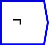
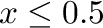

Next: Gamma
Up: Functions/Unary Operators
Previous: frac
Contents

The output is 1 or 0, depending on whether

is true (1) or false (0) respectively.
The operator can be placed on the canvas in two ways:
- From the Functions (``function'') toolbar; or
- By typing the letters ``not_'' (the word not, followed by an
underscore) on the canvas and then pressing the Enter key. The underscore
is needed because ``not'' is a reserved word in C++, the
programming language in which Ravel is written.